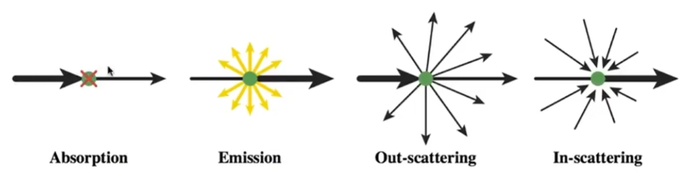
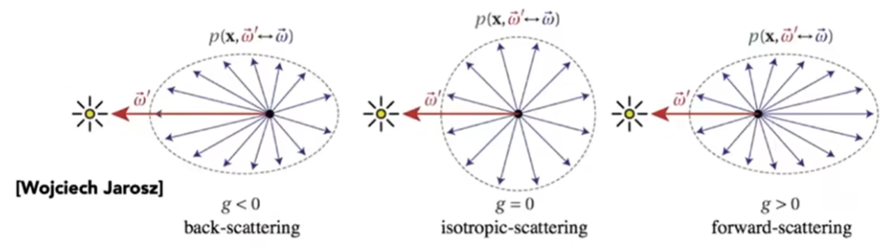
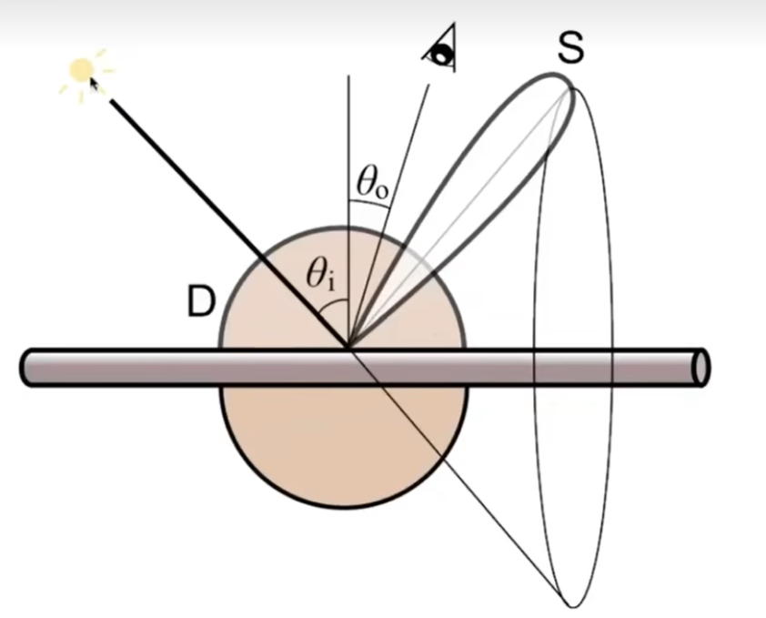
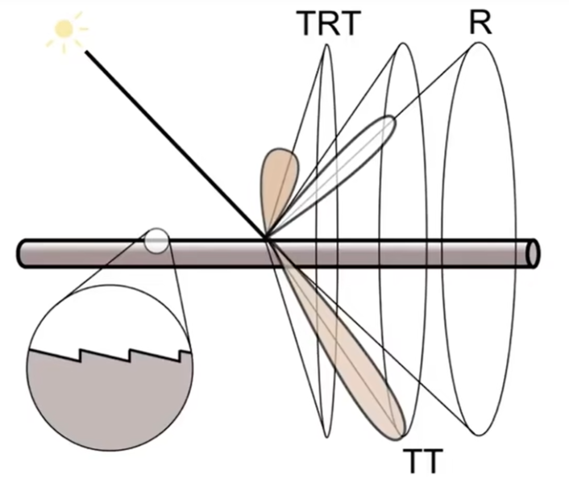
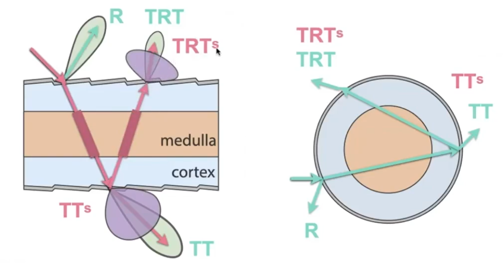
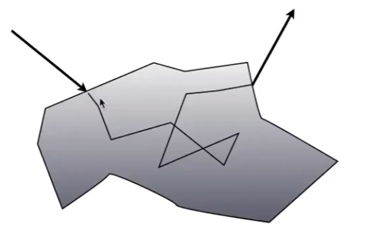
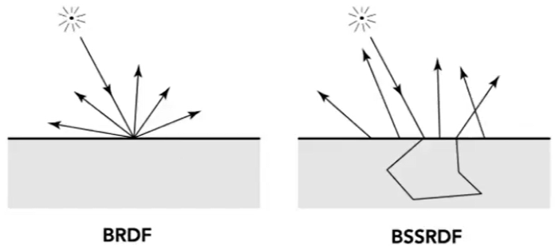
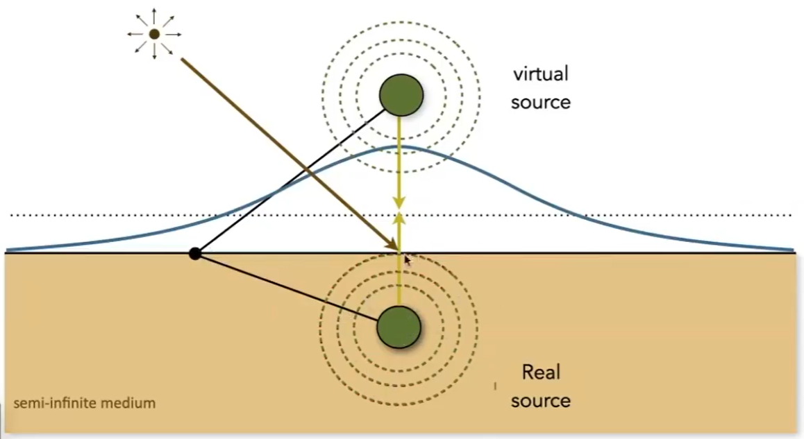

高级 Appreance 建模
非表面模型 [38：38]
反射介质
例如：雾、云
特点： 光线打到一个介质颗粒上，会被分散（散射）至到各个方向上（图3），也会接受到来自其它方向散射而来的光（图4）

怎么散射：
光线打到介质上后，散射的分布由Phase Function决定。以下是几种不同的Phase Function的例子：

光线在介质中走多远由介质对光线吸收呈度决定。
怎么生成 path? [42：07]
- 根据 phase function 决定 bounce 方向
- 根据 吸收率决定 distance
- 形成 ray path
Hair 表面 [45:45]
无色高光，有色高光
kajiya-Kay 模型
把每一根头发看成是圆柱，会把光线产生圆雉形的反射和各个方向的散射 效果：[47：05]

Marahner 模型
除了考虑反射、散射，还考虑折射。
光线与头发的作用可以有这几种：

- 反射，圆锥形方向。 R
- 进入（折射） + 出去（折射），圆雉， T T
- 进入（折射） + 内壁（反射） + 出去（折射）， TRT [49：24右]
对每一根头发都考虑以上的过程 效果：[49：46]
Fur 表面
Hair 模型缺少 Medulla 的模拟，因此用在动物上效果不好。
Double Cylinder 模型 [55：13]
增加 TTs 和 TRTs

💡 要进行高精度的模拟，细节的仿真也必不可少，关键是你怎么知道缺失的细节是什么？
Granular 颗粒材质
[58：37] 颗粒物质的建模，非常耗时
表面模型
半透明材质
例如：玉、水母
物理特点：光线从一个地方进去，从内部经过散射，然后从另一个地方出来

次表面反射BSSRDF，是BRDF的延伸：
| BRDF | BSSRDF |
|---|---|
| 入射点=出射点 | 入射点 \(\ne\) 出射点 (BSSRDF) |
| 各个方向积分 | 各个方向积分各个入射点积分 |
$$ L(x_o, \omega_o) = \int_A \int_{H^2}S(x_i, \omega_i, x_o, \omega_o) L_i(x_i, \omega_i) \cos\theta_i d\omega_i dA $$

Dipole 近似
用两个光源照射表面，能得到类似次表面映射的结果.[1:05:07]

布料 Cloth
布料结构[1：09：24] 纤维(fiber) → 股(ply) → 线(yarn) → 布(cloth)
Rendering as Surface
根据编织的形状计算
适用场景：[1：11：28左] 布料表面是平面
不适用场景：[1：11：28右] 布料表面不是平面
Render as Participating Media
把 cloth 看作是空间体积，划分为细小的格子.
用渲染云的方式来渲染cloth。
Render as Fiber
暴力计算
细节模型
渲染效果过于完美因此不真实。因为实际上不可能这么完美，多少会有些微小的划痕。
程序化生成外观 [1:27:21]
定义函数f(x, y, z)，用于查询空间中某一点的纹理
本文出自CaterpillarStudyGroup，转载请注明出处。
https://caterpillarstudygroup.github.io/GAMES101_mdbook/